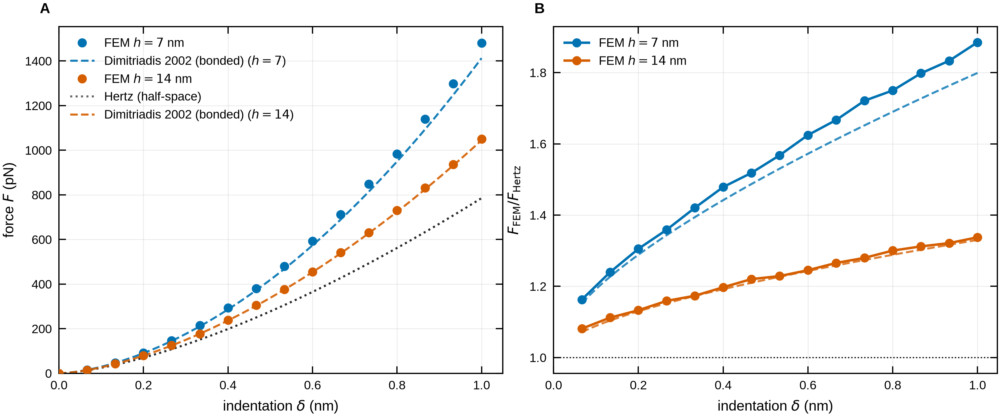
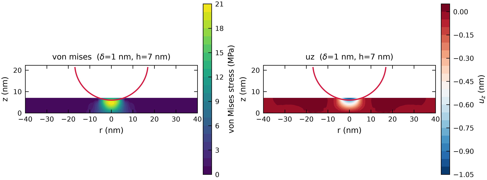

Axisymmetric contact FEM
Small-strain elasticity with P2 elements, an exact spherical gap function and penalty contact solved by an active-set Newton method.
Finite-element simulation and analysis of AFM nanoindentation of thin elastic films, validated against analytic contact mechanics.
git clone https://github.com/LorenaRedondo/nanoindent && cd nanoindent && uv syncAn open-source Python alternative to the commercial-FEM workflow for AFM indentation of thin films, with the analytic tools to check its answers.
Small-strain elasticity with P2 elements, an exact spherical gap function and penalty contact solved by an active-set Newton method.
Hertz, Dimitriadis 2002, Garcia and Garcia 2018 and Chadwick models, plus mesh, penalty and load-step convergence studies.
Force maps and dynamic moduli E′(ω), E″(ω) from a single solve, since force is exactly proportional to modulus.
Breakthrough force, area compressibility and modulus from force maps, with a bridge to composition-based predictions.
Readers, drift correction, tracking, diffusion and event detection for imaging dynamics.
Online analysis, safety envelope, run recording and replay, with instrument adapter scaffolds for common AFM vendors.
Agreement with another solver would show two codes made similar choices. Agreement with Hertz and the published film corrections shows the result is right.

A bonded thin film is stiffer than the Hertz half-space, and thinner films are stiffer still. At δ = 1 nm the solver gives:
Equilibrium is checked with two independent reaction-force measures, and the test suite pins the solver to analytic laws in the thick-film limit.
Python 3.11+. The default backend is scikit-fem, installed from PyPI with no compiler needed.
git clone https://github.com/LorenaRedondo/nanoindent.git
cd nanoindent
uv sync
uv run python examples/paper_reproduction.pyfrom nanoindent import SimulationConfig, IndentationSolver
cfg = SimulationConfig(R=17.0, E=130.0, nu=0.3,
h=7.0, L=100.0, delta_max=1.0)
result = IndentationSolver(cfg).run()
result.plot(compare=["hertz", "dimitriadis_bonded"])Lengths in nm, moduli in MPa, forces in pN. Optional features install as extras, for example uv sync --extra web --extra viz.
All figures and animations are generated by the scripts in examples/ from simulated data.

nanoindent began as an internal research tool. The API may change between releases, and the software is provided as is, without warranty. Validate results independently before they inform scientific conclusions.
nanoindent is a collaboration between Lorena Redondo-Morata’s lab and Alpibru.